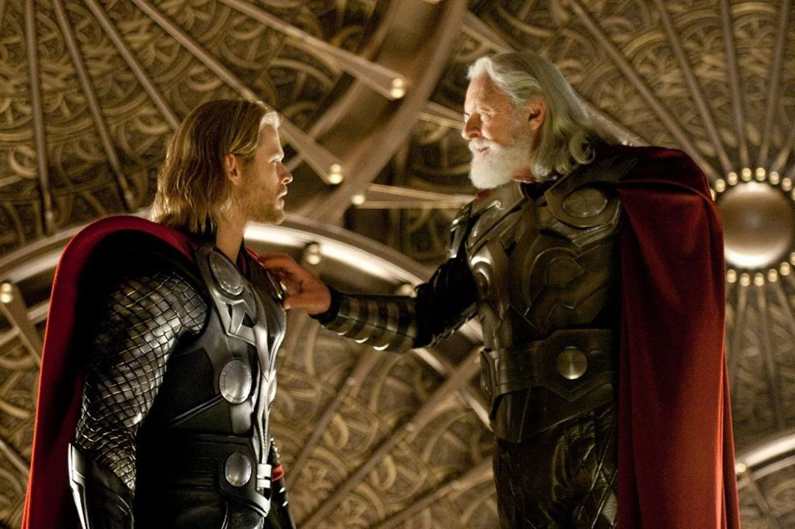

Thor é um filme de super-herói americano de 2011, baseado no personagem homônimo da Marvel Comics, produzido pela Marvel Studios e distribuído pela Paramount Pictures.[a] É o quarto filme do Universo Cinematográfico Marvel. O filme foi dirigido por Kenneth Branagh, escrito por Ashley Edward Miller & Zack Stentz e Don Payne, e estrelado por Chris Hemsworth, Natalie Portman, Tom Hiddleston, Stellan Skarsgård, Colm Feore, Ray Stevenson, Idris Elba, Kat Dennings, Rene Russo e Anthony Hopkins. O filme conta a história de Thor, o príncipe herdeiro de Asgard, banido à Terra e despojado de seus poderes depois que ele reinicia uma guerra antiga. Como seu irmão, Loki, planeja tomar o trono para ele mesmo, Thor deve provar ser digno e recuperar seu martelo, o Mjöllnir.

Cena de Odin e Thor do filme Thor.
Sam Raimi desenvolveu primeiro o conceito de uma adaptação cinematográfica de Thor em 1991, mas logo abandonou o projeto, o deixando em "desenvolvimento parado" por vários anos. Durante este tempo, os direitos foram adquiridos por vários estúdios de cinema até que a Marvel Studios contratou Mark Protasiewicz para desenvolver o projeto em 2006, e planejava financiá-lo e lançá-lo através da Paramount Pictures. Matthew Vaughn foi originalmente contratado para dirigir o filme numa tentativa de lançamento para 2010. No entanto, depois que Vaughn saiu do projeto em 2008, Branagh foi contratado e o lançamento do filme foi reprogramado para 2011. Os personagens principais foram escalados em 2009, e as filmagens ocorreram na Califórnia e Novo México de janeiro a maio de 2010. O filme foi convertido para 3D na pós-produção.
Thor estreou em 17 de abril de 2011, em Sydney, Austrália e foi lançado em 6 de maio de 2011, nos Estados Unidos. O filme foi um sucesso financeiro e recebeu críticas geralmente positivas de críticos de cinema. O DVD e o Blu-ray foram lançados em 13 de setembro de 2011. Uma sequência, Thor: The Dark World, foi lançada em 8 de novembro de 2013. O terceiro filme da trilogia, Thor: Ragnarok, chegou aos cinemas em 3 de novembro de 2017. No Brasil e em Portugal, a estreia ocorreu antes, no dia 26 de outubro.
Enredo
Em 965 D.C., Odin, rei de Asgard, declara guerra contra os Gigantes de Gelo de Jotunheim e seu líder Laufey, para os impedir de conquistar os nove reinos, começando pela Terra. Os guerreiros Asgardianos derrotam os Gigantes de Gelo e conseguem pegar a fonte do seu poder, uma caixa de gelo.
No presente, o filho de Odin, Thor se prepara para ascender ao trono de Asgard, mas é interrompido quando os Gigantes de Gelo tentam recuperar a caixa. Contra a ordem de Odin, Thor viaja para Jotunheim para enfrentar Laufey, acompanhado por seu irmão Loki, sua amiga de infância Sif e os Três Guerreiros Volstagg, Fandral e Hogun. Uma batalha acontece até Odin intervir para salvar os Asgardianos, destruindo a frágil trégua entre as duas raças. Devido à arrogância de Thor, Odin tira-lhe todo o poder divino e bane-o para a Terra como um mortal acompanhado de seu martelo Mjölnir, agora protegido por um encantamento para permitir que apenas os dignos possam empunhá-lo.
Loki descobre que é filho de Laufey e que foi adotado por Odin depois que a guerra terminou. Odin, dominado pelo estresse da descoberta de Loki e o banimento de Thor, cai no profundo "Sono de Odin" que irá lhe permitir recuperar-se. Loki se torna rei e oferece a Laufey a chance de matar Odin e recuperar a caixa.
Sif e os Três Guerreiros, infelizes com o governo de Loki, tentam resgatar Thor de seu exílio, convencendo Heimdall, guardião do Bifröst - o meio de viajar entre os mundos - para permitir a passagem para a Terra. Consciente do seu plano, Loki envia o Destruidor, um robô aparentemente indestrutível, para persegui-los e matar Thor. Os guerreiros encontram Thor, mas o Destruidor os encontra e os derrota, fazendo Thor oferecer sua própria vida para que os outros possam se afastar em segurança. Derrotado pelo Destruidor e próximo da morte, o sacrifício de Thor prova-o digno de empunhar Mjölnir. O martelo retorna a ele, devolvendo os seus poderes e habilitando-o para derrotar o Destruidor. Thor se despede de Jane com um beijo e promete voltar depois de ir para Asgard junto com os guerreiros para derrotar Loki.
Em Asgard, Loki trai e mata Laufey, revelando o seu verdadeiro plano de usar a tentativa de Laufey de atentar contra a vida de Odin como uma desculpa para destruir Jotunheim com a ponte Bifröst, provando-se digno de seu pai. Thor chega e luta com Loki antes de destruir a Ponte Bifröst para parar o plano de Loki, prendendo-o em Asgard. Odin acorda e impede os irmãos de cair no abismo criado na esteira da destruição da ponte, mas Loki permite-se cair. Thor faz as pazes com Odin, admitindo que ele não está pronto para ser rei, enquanto na Terra, Jane e sua equipe buscam uma maneira de abrir um portal para Asgard.
Em uma cena pós-créditos, Selvig foi levado para uma instalação da S.H.I.E.L.D., onde Nick Fury abre uma maleta e pede-lhe para estudar um objeto misterioso,[b] que Fury diz que têm um poder incalculável. Um Loki invísivel ordena que Selvig concorde, e Selvig faz.
Elenco e personagens
Chris Hemsworth como Thor: O príncipe herdeiro de Asgard, baseado na divindade da mitologia nórdica de mesmo nome. O diretor Kenneth Branagh e o chefe da Marvel Studios, Kevin Feige, escolheram Hemsworth depois de um processo "vai-e-vem" em que o ator de 27 anos foi inicialmente desconsiderado e, em seguida, dada uma segunda oportunidade de concorrer ao papel. Hemsworth declarou que ele ganhou 20 quilos para o papel e revelou que "não foi até Thor que eu comecei a levantar pesos, era tudo muito novo para mim". Em relação a sua interpretação do personagem, Hemsworth disse: "Nós simplesmente tentamos tentando humanizá-lo de tudo e mantê-lo muito real. Olhamos para toda a pesquisa sobre os quadrinhos que pudemos, mas também trazê-lo de volta para "Quem é esse cara como pessoa, e qual é o relacionamento dele com as pessoas nas cenas individuais?" Sobre abordar o estilo de luta de Thor, ele comentou: "Primeiro, olhamos para os quadrinhos e as posturas, a forma como o Thor se movimentava e lutava, e muito de seu poder parece ser elaborado através do solo. Falamos com boxeadores, você sabe, Mike Tyson, muito baixo para o chão e peito aberto e grandes balanços de ombros e muito tipo de brutal, mas gracioso ao mesmo tempo, e então, quando filmamos, as coisas ficaram mais fáceis". Dakota Goyo interpreta um jovem Thor.
Natalie Portman como Jane Foster: Uma cientista e interesse amoroso de Thor. A Marvel Studios declarou em um anúncio que a personagem foi atualizada a partir do retrato inicial dos quadrinhos para a adaptação do filme. Quando perguntada por que ela assumiu o papel, Portman respondeu: "Eu apenas pensei que soou como uma ideia estranha porque Kenneth Branagh dirigia isso, então eu fiquei como: 'Kenneth Branagh fazendo Thor é super-estranho, eu tenho que fazer isso.'" Portman declarou que ela realmente queria fazer um filme de grandes efeitos que enfatizasse seus personagens, e chegar a fazer isso com Branagh era uma nova maneira de abordar isto, relativo a Star Wars. Em relação a sua preparação para o papel, Portman comentou: "Eu assinei para fazer isso antes que houvesse um roteiro. E Ken, que é incrível, que é tão incrível, ficou como, 'Você pode realmente ajudar a criar essa personagem. Eu tive que ler todas essas biografias de mulheres cientistas como Rosalind Franklin, que realmente descobriu a dupla hélice do DNA, mas não obteve crédito por isso. As lutas que elas tiveram e do jeito que eles pensavam – eu fiquei como, 'Que grande oportunidade, em um filme muito grande que será visto por muitas pessoas, ter uma mulher como cientista'. Ela é uma cientista muito séria. Porque nos quadrinhos ela é uma enfermeira e agora a fizeram uma astrofísica. Realmente, eu sei que isso parece bobo, mas são as pequenas coisas que as meninas pensam que é possível. Não lhes dá um [papel de] modelo de "Oh, eu só tenho que me vestir bonito nos filmes".
Tom Hiddleston como Loki: O irmão adotivo de Thor e nêmesis baseado na divindade de mesmo nome. Hiddleston foi escolhido depois de trabalhar anteriormente com Branagh em Ivanov e Wallander. Inicialmente, Hiddleston fez teste para interpretar Thor, mas Branagh decidiu que o seu talento seria melhor aproveitado interpretando Loki. Hiddleston declarou que, "Loki é como uma versão em quadrinhos de Edmund de Rei Lear, mas mais desagradável". Hiddleston afirmou que ele tinha que manter uma dieta rigorosa antes do início das filmagens porque "Ken (Branagh) queria que Loki tivesse uma aparência magra e faminta, como Cassius de Júlio César. Fisicamente, ele não pode estar posando como Thor". Hiddleston olhou Peter O'Toole como inspiração para Loki, assim explicando: "Curiosamente, Kenneth Branagh disse para olhar Peter O'Toole em dois filmes específicos, O Leão no Inverno e Lawrence da Arábia. O que é interessante sobre ... o seu desempenho é que você vê o quão danificado ele está. Há uma crueza [para a performance dele]; é quase como se ele está vivendo com uma camada de pele descascada. Ele é grandioso e, em certos momentos, por sua vez, hilariante e, em seguida, aterrorizante. O que queríamos era aquela volatilidade emocional. É um estilo de atuação diferente, não é exatamente a mesma coisa, mas é fascinante voltar e assistir um ator tão grande como O'Toole". Ted Allpress interpreta um jovem Loki.
Stellan Skarsgård como Erik Selvig: Um cientista fazendo pesquisas no Novo México que encontra Thor. Skarsgård afirmou que não estava familiarizado com a versão dos quadrinhos de Thor. Quanto ao motivo dele ter assumido o papel, Skarsgård observou que "escolhi Thor por causa do [diretor] Kenneth Branagh. O roteiro foi bom e tivemos que ensaiar e conversar com os roteiristas e colaborar no processo para que ele se ajustasse a nós. Então eu tive um tempo muito feliz nisso. O que eu sempre tento fazer é imediatamente fazer algo que eu simplesmente não fiz, então eu tenho variação na minha vida. Eu fiz cerca de 90 filmes e, se eu fizesse o mesmo repetidamente, ficaria entediado até agora. Eu tento escolher filmes diferentes, eu vou fazer esses grandes e tendo feito isso, eu geralmente posso dar ao luxo de ir e fazer filmes muito pequenos e obscuros e experimentar um pouco".
Colm Feore como Laufey: Rei dos Gigantes de Gelo e o pai biológico de Loki, baseado no ser mitológico de mesmo nome, que na mitologia era na verdade a mãe de Loki. Feore declarou que demorou cinco horas para que sua maquiagem fosse aplicada. Sobre o seu personagem, Feore comentou: "Eu sou o Rei dos Gigantes de Gelo. E se você já viu algum dos Gigantes Gelo, você sabe que eu sou, é claro, o Napoleão dos Gigantes de Gelo." Ele disse que o estudo de Shakespeare que ele compartilhou com Hopkins e o diretor Branagh ajudou a manter a produção em movimento rapidamente, dizendo que "durante as pausas, Tony, eu e Ken estávamos falando na estenografia de Shakespeare sobre o que os personagens estavam fazendo, no que pensávamos que eles podem ser, e como poderíamos concentrar nossa atenção de forma mais inteligente. Estas foram discussões que levaram apenas alguns minutos entre as tomadas, mas permitiram que Ken, Tony e eu nos entendêssemos instantaneamente sem que Ken demorasse uma hora para explicar aos atores exatamente o que estava acontecendo. Então isso foi extremamente útil."
Ray Stevenson como Volstagg: Um membro dos Três Guerreiros, um grupo de três aventureiros Asgardianos que estão entre os camaradas mais próximos de Thor, conhecido por seu apetite e circunferência larga. Stevenson trabalhou anteriormente com Kenneth Branagh no filme de 1998, The Theory of Flight, e pratagonizou um filme baseado em um personagem da Marvel, Punisher: War Zone. Sobre o físico de Volstagg, Stevenson disse, "Ele tem toda essa verniz e vigor de Falstaff, e um pouco de barriga de cerveja para sugerir esse enorme apetite, mas ele não é o tipo de figura em forma de Weeble que ele é nos quadrinhos. Ele é Falstaff com músculos. Eu tenho essa incrível espuma injetada sob o traje que flui comigo."
Idris Elba como Heimdall: O sentinela Asgardiano que tudo vê e tudo ouve, guardião da Ponte de Bifrost, baseado na divindade nórdica de mesmo nome. Elba disse que o envolvimento de Branagh foi um grande incentivo para assumir o papel: "[Branagh] me chamou pessoalmente e disse:" Sei que este não é um papel importante, mas eu realmente adoraria ver você interpretando ele". É Kenneth Branagh. Eu era como, 'Definitivamente'". Sobre o papel Elba observou, "eu fiz tela verde pela primeira vez! No entanto, eu não gostaria de fazer um filme inteiro de tela verde. Você esquece o enredo um pouco—como estar em uma peça da Broadway e fazendo isso uma e outra vez e esquecendo sua linha a meio caminho". Elba afirmou ter feito um compromisso de quatro filmes com a Marvel Studios. A escalação de Elba levou a uma proposta de boicote pelo Conselho dos Cidadãos Conservadores e um debate entre os fãs de quadrinhos, alguns insistindo que era errado que um homem negro interpretasse um deus nórdico. Em resposta, Elba chamou o debate de "ridículo".
Kat Dennings como Darcy Lewis: Uma especialista em ciência política que é a estagiária de Jane Foster. Dennings descreveu seu personagem como a "pequena ajudante gnomo de Foster". Dennings afirmou que seu papel foi expandido durante o processo de ensaio. Dennings explicou, "Ela é como uma filhinha fofa e despreocupada. Não havia muito na página para o papel de Darcy para começar e eu nem vi um roteiro antes de assumir o papel, então eu realmente não sabia quem era Darcy no início. Mas ela realmente evoluiu—ela é tão divertida agora. Ela é muito Scooby-Doo se isso faz sentido. Ela está sempre três passos atrás e reagindo ao que está acontecendo com essas grandes expressões ... Ela faz as coisas errados e não se importa."
Rene Russo como Frigga: A esposa de Odin, rainha de Asgard, mãe de Thor e mãe adotiva de Loki, baseada na divindade mitológica de mesmo nome. Russo afirmou em uma entrevista de março de 2011 que ela assinou contrato para possíveis sequências, brincando que, ""Eventualmente eles vão me expulsar, então quem sabe quantos eu vou fazer".
Anthony Hopkins como Odin: O governante de Asgard, pai de Thor e pai adotivo de Loki, baseado na divindade nórdica de mesmo nome. Em uma entrevista, Hopkins afirmou que não sabia nada os quadrinhos. Sobre o filme, ele disse, "É um filme de super-herói, mas com um pouco de Shakespeare" jogado dentro". Hopkins declarou, "Eu estou muito interessado nessa relação entre pais e filhos", e que, "a relação do meu pai comigo estava fria. Quando eu era jovem, ele expressou sua decepção porque eu estava ruim na escola e tudo isso. Ele não quis dizer nada, mas eu senti que nunca iria atender as suas expectativas". Hopkins manifestou que ele encontrou uma ressonância pessoal no papel de Odin, dizendo, "Ele é um homem severo. Ele é um homem com um propósito. Eu faço o deus que expulsa o filho do reino de Asgard, porque ele errou. Ele é um cabeça-quente, jovem temperamental, provavelmente um chip fora do bloco velho, mas eu decidi que ele não está realmente pronto para governar o reino futuramente, então eu o bano". Em maio de 2016, Mel Gibson revelou que foi procurado para o papel, mas recusou.
Tadanobu Asano como Hogun: Um membro dos Três Guerreiros, identificado principalmente pelo seu comportamento severo e como o único membro que não é um Aesir. Ray Stevenson disse sobre o personagem de Asano, "Ele não fala muito, mas quando ele fala, todo mundo se cala. Mas também na sala de cura onde todos lambem suas feridas, ele é o cara que só fala sobre seu negócio".
Josh Dallas como Fandral: Um membro dos Três Guerreiros, caracterizado como um swashbuckler irreprimível romântico. Stuart Townsend foi inicialmente escalado após Zachary Levi ser forçado a abandonar o papel devido a um conflito de agenda. No entanto, dias antes do início das filmagens, Townsend foi substituído por Dallas citando "diferenças criativas". Dallas disse acreditar que Fandral "gostaria de pensar em si mesmo um namorador. Ele gostaria de pensar em si mesmo, eu estava dizendo, como o R. Kelly de Asgard. Ele é um amante, não um lutador". Dallas mencionou que Errol Flynn foi uma inspiração para o personagem, dizendo: "Ele foi uma grande inspiração para o personagem e para mim. Eu vi um monte de seus filmes. Eu tentei trazer um pouco de Flynn nele. Flynn tinha muito desse charme pueril que Fandral tem..."
Jaimie Alexander como Sif: Uma guerreira e amiga de infância de Thor, baseada na divindade mitológica do mesmo nome. Alexander disse que ela estava familiarizada com a Marvel Comics antes de ter assumido o papel, tendo crescido com quatro irmãos. Alexander disse que o papel exigiu horas por dia no ginásio, embora o treino não tenha sido estranho para ela, explicando que ela era uma das poucas meninas da equipe de luta profissional do ensino médio em sua escola em Colleyville, Texas. Alexander descreveu sua personagem como "um dos caras" e que, "ela é uma guerreira talentosa e habilidosa e pode ficar sozinha contra qualquer vilão no filme". Sobre seu relacionamento com Thor, ela afirmou: "Ela é muito leal a Thor e se preocupa muito com proteger ele e proteger Asgard".
Além disso, Clark Gregg reprisa seu papel como o agente da S.H.I.E.L.D., Phil Coulson, dos filmes do Homem de Ferro. Adriana Barraza interpreta a proprietária do café-restaurante Isabel Alvarez e Maximiliano Hernández interpreta o agente da S.H.I.E.L.D., Jasper Sitwell. Joseph Gatt, Joshua Cox e Douglas Tait interpretam os Gigantes de Gelo. Stan Lee e J. Michael Straczynski tem aparições cameo como motoristas de caminhão pick-up, Walter Simonson tem uma aparição cameo como um dos convidados em um grande banquete Asgardiano, e Samuel L. Jackson e Jeremy Renner tem cameos não creditados como Nick Fury e Clint Barton, respectivamente.
Desenvolvimento
Sam Raimi originalmente imaginou uma ideia para Thor depois de fazer Darkman (1990); ele teve uma reunião com Stan Lee e apresentou seu conceito para a 20th Century Fox, mas eles não entenderam ele. Thor foi abandonado até abril de 1997, quando a Marvel Studios estava começando a crescer. O projeto ganhou impulso após o sucesso de X-Men (2000). O plano era que Thor fosse feito para a televisão. A UPN estava em negociações para exibi-lo; entusiasmados pela perspectiva, eles se aproximaram de Tyler Mane para interpretar Thor. Em maio de 2000, a Marvel Studios trouxe a Artisan Entertainment para financiá-lo como um filme, mas em junho de 2004 o projeto ainda não havia sido patrocinado por um estúdio. Finalmente, a Sony Pictures Entertainment comprou os direitos do filme e, em dezembro de 2004, David S. Goyer estava em negociações para escrever e dirigir. Em 2005, embora houvesse conversações entre Goyer e a Marvel, que Goyer não estava mais interessado, embora neste momento o filme ainda seria distribuído pela Sony Pictures.
Mark Protosevich, um fã das histórias em quadrinhos de Thor, concordou em escrever o roteiro em abril de 2006, e o projeto se mudou para a Paramount Pictures, depois dela ter adquirido os direitos da Sony. Nesse ano, o filme foi anunciado para ser uma produção da Marvel Studios. Em dezembro de 2007, Protosevich descreveu seus planos para "ser como uma história de origem de super-herói, mas não sobre um ser humano ganhando super poderes, mas sobre um deus percebendo seu verdadeiro potencial. É a história de um deus do Antigo Testamento que se torna um deus do Novo Testamento". Em agosto de 2007, a Marvel Studios contratou Matthew Vaughn para dirigir o filme. Vaughn então reescreveu o roteiro de Protosevich para reduzir o orçamento para 150 milhões de dólares, já que o roteiro de Protosevich iria custar 300 milhões de dólares para produzir. Ele pretendia começar a filmar no final de 2008 e depois do sucesso de Homem de Ferro, a Marvel Studios anunciou que pretendia lançar Thor em 4 de junho de 2010, com Homem de Ferro 2 sendo usado para introduzir o personagem Thor.